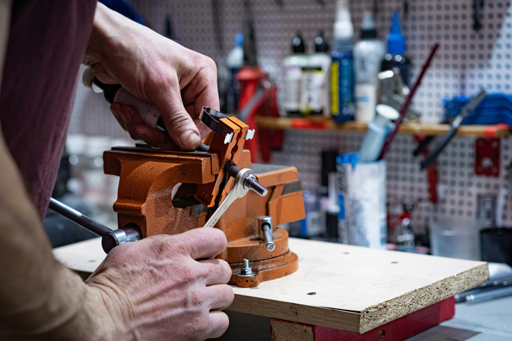

Egocentric video captures activities from the first-person perspective, typically using head-mounted cameras, wearable devices, or other forward-facing recording systems. Unlike conventional surveillance or third-person footage, these videos reveal what a person sees while performing a task. Hand-object interaction annotation identifies and labels the relationship between human hands and the objects they manipulate.
It captures not only the presence of a hand or object but also the nature, timing, and progression of the interaction. For example, when a person picks up a screwdriver, an annotated dataset may identify the hand approaching the tool, the moment of contact, the grasp, the subsequent movement, and the eventual release. Key annotation elements include:
Together, these annotations convert unstructured visual observations into machine-readable information that can support robot learning.
Human demonstrations offer valuable insights into how objects are handled in real-world situations. A seemingly simple task, such as placing a glass on a shelf, involves several coordinated actions: locating the glass, reaching toward it, establishing a stable grip, lifting it, transporting it, and releasing it carefully. Annotated egocentric videos help AI models identify these action sequences and the visual cues associated with each stage.
When combined with suitable robot demonstrations, action labels, and control signals, this information can support imitation learning and manipulation-policy development. Robots can learn from examples of human behavior rather than relying exclusively on manually programmed instructions.
An object’s affordances describe the actions it enables. A handle provides a gripping opportunity, a button can be pressed, and a container lid may be lifted or rotated. Hand-object interaction annotation helps models associate object characteristics with observed manipulation behaviors. For instance, repeated examples of people grasping handles from different angles can provide useful evidence for learning grasp-related visual patterns.
This capability is particularly valuable when robots encounter unfamiliar objects or environments. Instead of depending solely on predefined object categories, models can use visual context and learned interaction patterns to identify plausible actions.
Real-world manipulation rarely happens under perfect conditions. Hands obscure objects, lighting changes, surfaces create reflections, and objects move unexpectedly. Egocentric datasets expose models to these challenges from the perspective of the person performing the task. Annotated examples can help distinguish actual contact from visual overlap and preserve interaction information across changing viewpoints. However, annotation alone cannot guarantee robust robot behavior. Its effectiveness depends on dataset diversity, label quality, model architecture, and validation under real operating conditions.
Building a useful training dataset requires spatial labels, temporal information, and consistent relationships between interacting entities.
Annotators identify hands and relevant objects in individual frames using bounding boxes, keypoints, or segmentation masks. Bounding boxes are useful for object localization, while keypoints can represent hand-joint positions. Segmentation masks provide more detailed boundaries when precise object shapes or hand-object overlap matter. The annotation method should reflect the intended learning objective rather than adding unnecessary labeling complexity.
Physical interaction involves more than visual proximity. A hand near an object may be preparing to grasp it, attempting a failed grasp, or simply passing nearby. A well-defined annotation taxonomy distinguishes states such as approaching, touching, grasping, holding, manipulating, and releasing. These labels can help models learn meaningful interaction transitions.
Many everyday tasks consist of multiple connected actions. Temporal annotation identifies when each action begins and ends, creating a structured timeline of the activity. Consider a person using a measuring cup to transfer ingredients. The sequence may involve reaching, grasping, lifting, pouring, returning the cup, and releasing it. Labeling these stages allows models to learn action order, duration, and transitions.
In complex scenes, several objects may appear simultaneously, move independently, or become temporarily hidden behind a hand. Multi-object tracking helps maintain consistent identities for visible objects across frames. Reliable tracking preserves object continuity throughout the interaction. When combined with hand-object relationship labels, it helps reconstruct which objects were manipulated, when they moved, and where they ended up.
Despite its value, first-person footage presents several technical challenges that can affect dataset quality.
To address these issues, robotics teams should establish standardized annotation guidelines, use representative pilot datasets, conduct expert reviews, and implement quality assurance checks. Difficult frames and ambiguous interactions should receive targeted review to improve consistency.
A reliable dataset requires a systematic approach to annotation design and validation.
These practices help reduce annotation noise and make training datasets more useful for developing and evaluating robotic perception systems.
Developing advanced robotics systems requires more than collecting large volumes of video. AI teams need structured annotations that consistently represent objects, interactions, and actions across diverse real-world scenarios. Annotalabs supports AI development through video annotation workflows designed around project-specific labeling requirements, including object localization, temporal action labeling, and tracking-related tasks.
For organizations evaluating video annotation outsourcing services, a specialized partner can help scale labeling operations, establish consistent annotation standards, and manage quality assurance as dataset requirements grow. Choosing an experienced video annotation company can also allow robotics teams to focus internal resources on model development, experimentation, and deployment while external annotation workflows support the preparation of training data.
For hand-object interaction projects, the appropriate annotation strategy depends on the target application, dataset complexity, required label granularity, and evaluation criteria. Annotalabs works toward transforming raw visual recordings into structured datasets that support research and development across robotics, computer vision, and embodied AI. The goal is simple: make visual data more useful for teaching machines how humans interact with the physical world.
Hand-object interaction annotation in egocentric video is an important component of building robots that can learn from human demonstrations. By capturing hand movements, object identities, contact states, and temporal action sequences, annotation provides structured information that can support manipulation learning and robotic perception. Nevertheless, the value of a dataset depends on more than its size. Precise labels, consistent tracking, representative scenarios, and rigorous quality control determine how effectively annotated data can support model training and evaluation.
As embodied AI continues to evolve, organizations that invest in well-structured training datasets will be better positioned to develop systems capable of understanding complex physical interactions. Ready to turn first-person video into actionable training data? Partner with Annotalabs to explore scalable video annotation solutions for hand-object interaction, multi-object tracking, and robot learning.